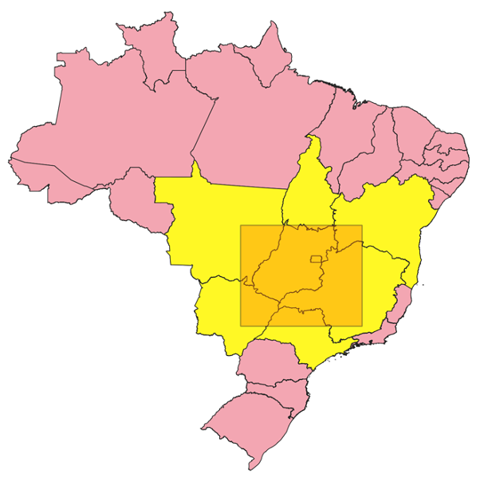

4.3. Consultas de Janela ou Intervalo
Consulta: Quais UF possuem geometrias com interação com o retângulo de coordenadas \((-54.23, -21.49)\) e \((-43.89, -12.90)\)?
|
 |
Nota
Este tipo de consulta também é conhecida por Window Query ou Range Query.